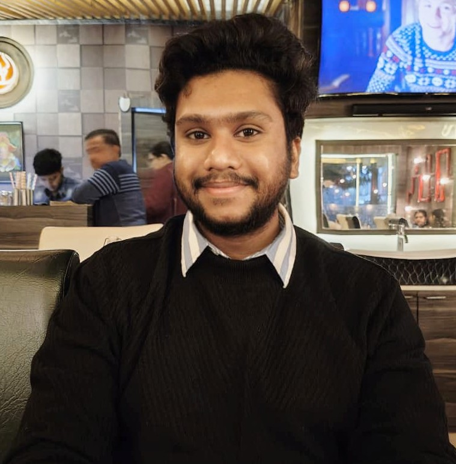

2026
PhD Student · Computing and Data Sciences . FLAME University
Ankit Sinha
Computer Vision | Machine Intelligence | Human Computer Interaction | Augmented and Virtual Reality
I am a PhD student in the Department of Computing and Data Sciences at FLAME University, Pune, India. My research lies at the intersection of Computer Vision, Machine Intelligence, and Human-Computer Interaction, with a particular interest in Augmented and Virtual Reality.

Introduction
About Me
My research interests lie in developing intelligent systems that connect visual perception, machine learning, and human interaction. I am particularly interested in Document Image Analysis, Optical Music Recognition (OMR), multimodal learning, and collaborative Extended Reality experiences.
I also explore how AI-enabled tools can support learning and creative activities, including music learning in virtual environments.
What I study
Research Interests
Research output
Publications
Selected work
Research Projects
01
AdaScore-RL
An adaptive preprocessing framework that uses reinforcement learning to improve music notation recognition in degraded score images.
Project / Code02
SWARA Percussion Dataset
A percussion-focused sheet music dataset with image-level and symbol-level annotations.
Dataset / Paper03
PianoVAM Research
Research using synchronized audio, video, MIDI, hand-skeleton, and fingering information for piano performance analysis.
Project / Code04
Collaborative Extended Reality Experiences
Research investigating collaborative experiences, interaction techniques, and human-centered design in extended reality.
ProjectAcademic background
Education
Aug 2025 – Present
PhD in Computer Vision and Human-Centered AI
FLAME University
School of Computing and Data Sciences
Jul 2023 – Jun 2025
M.S. in Data Science
Add your university name
Aug 2020 – Jun 2023
B.S. in Mathematics
Add your college name
Beyond research
Academic Activities
Teaching
Teaching mathematical foundations, including differential equations and related topics.
Conferences
ICDAR 2026 — accepted paper. Add presentation details here.
Open Research
Sharing reproducible research, datasets, annotation tools, and code.
Get in touch
Contact
I welcome research discussions and collaborations related to Computer Vision, Music Technology, Extended Reality, and Human-Centered AI.
ankit.sinha@flame.edu.in